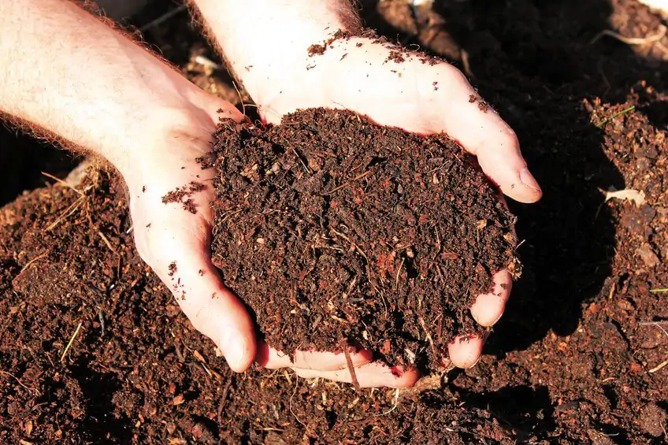
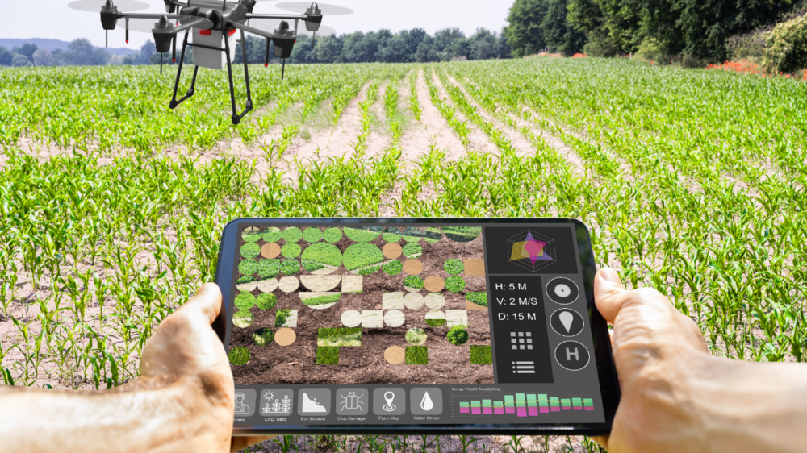
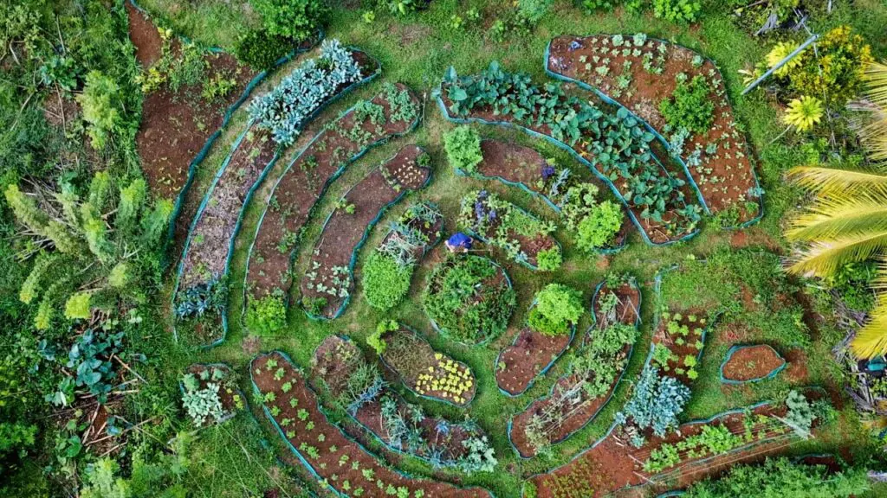

TECNOLOGIAS

ADUBOS ORGÂNICOS
A técnica de uso de adubos orgânicos viabiliza a melhoria dos níveis de produção, e também colabora em termos de sustentabilidade e comércio. Garante a qualidade do solo, aumento da fertilidade, sendo assim, capaz de reter água e nutrientes, resultando em plantações saudáveis. Pode também reduzir a necessidade de fertilizantes químicos, diminuindo custos e riscos para o consumo. Permite a expansão do mercado de produtos orgânicos que apresentam uma alta demanda, e ainda inclui uma diversidade de aplicadores que contribuem para a resistência do solo e influenciam no fluxo econômico.

AGRICULTURA DE PRECISÃO

PERMACULTURA